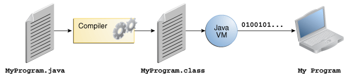
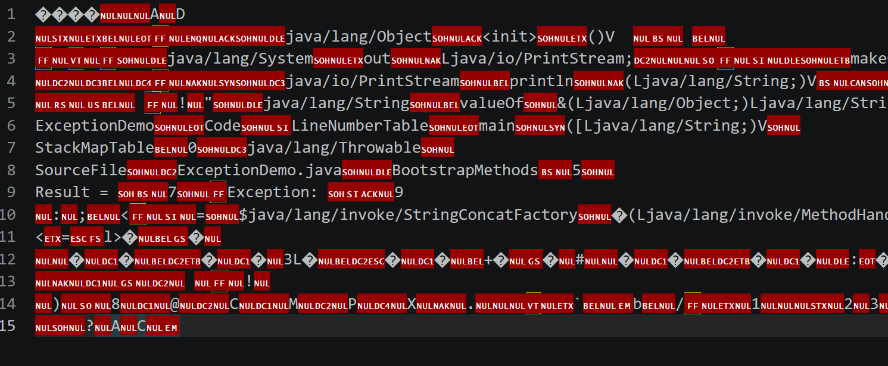
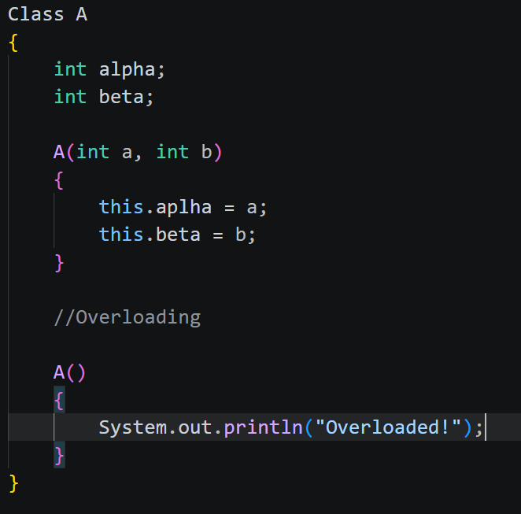
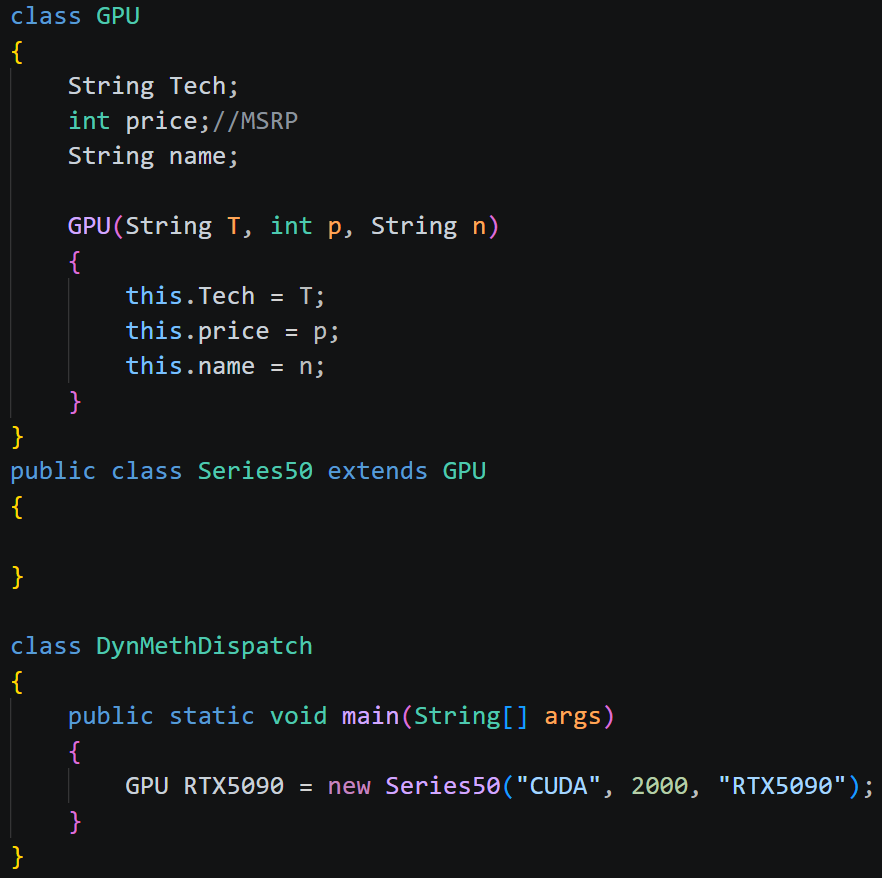
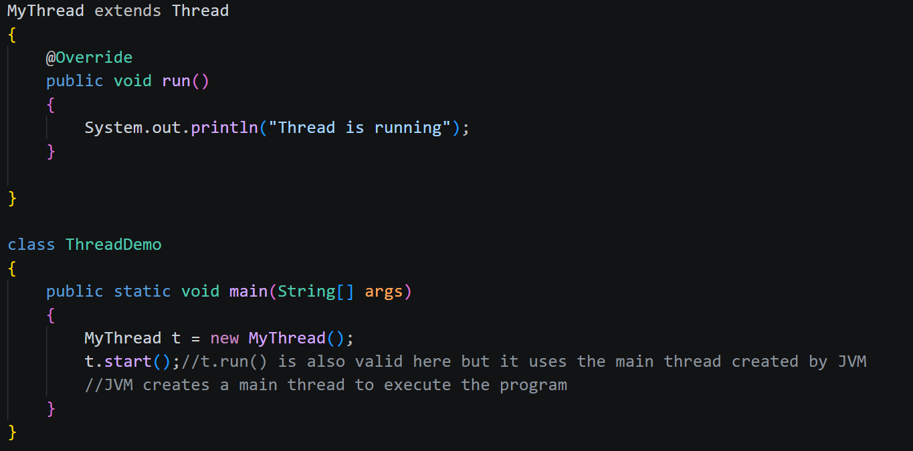
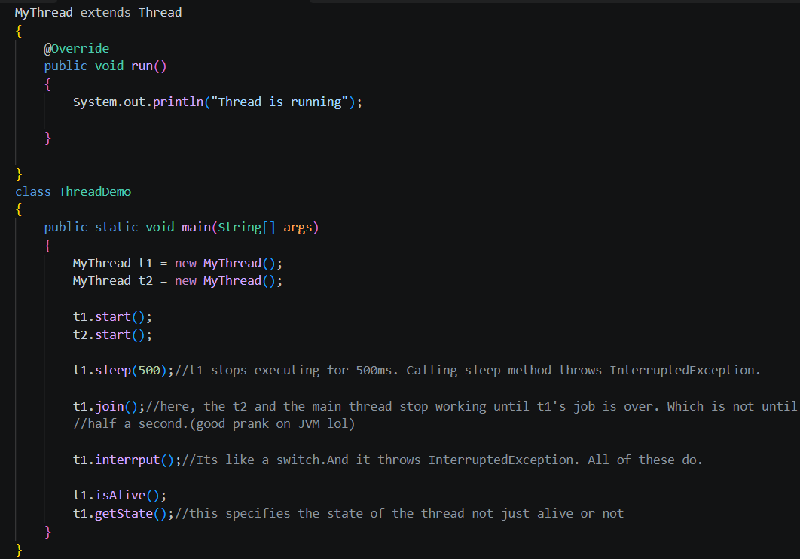
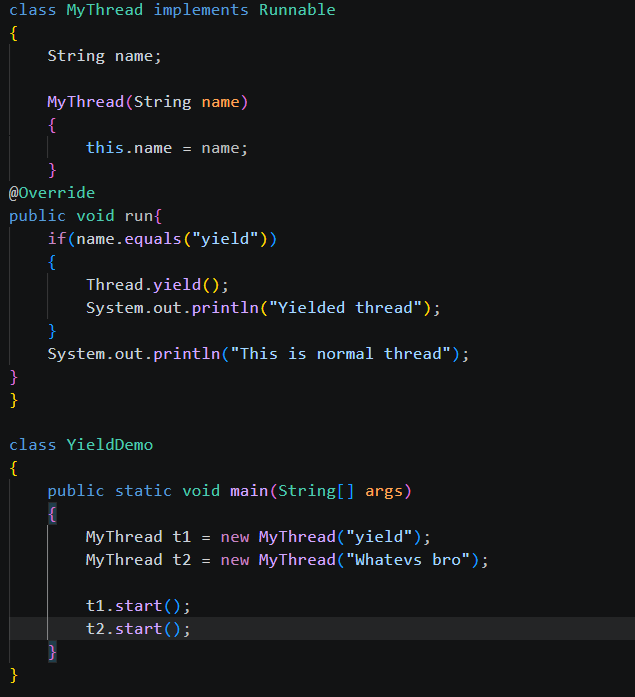

First, the code is written in a simple text editor with .java extension. Then, after compiling,
the compiler creates a .class file which has bytecode(The machine language of JVM).

Bytecode when tried to open with regular text editor:

The java platform is based on
1. The JVM(Java Virtual Machine)
2. The Java API
The signature of a method is a unique identity given to the method.
Constructor Overloading

Static: This disables the classes, variables, methods from creating new instances of itself.
(prevents overloading and inheritance)
Final: This disables the user from further updating the existing variables.
This was created to prevent programmers from accidental edits of universal constants.
StringTokenizer is a legacy class which encapsulates some methods related to strings(lives in java.util package)
Dynamic Method Dispatch(Run-Time Polymorphism/Dynamic Binding)

An abstract class provides a blueprint for the class meanwhile an interface tells what a class can or cannot do.
Member inner class: The inner class is a member of the outer class. no complexity just a member.
Method-Local inner class: The inner class is inside the method. The method is a member of the outer class.
Static inner class : The static inner class has a static keyword to the inner class i.e it can't be inherited or used in dynamic method dispatch :((
Anonymous inner class: The class where there is no inner class. It is just overriding the existing class's method. Its basically a tissue paper
Thread basic program:

MultiThreading

Yield demo
